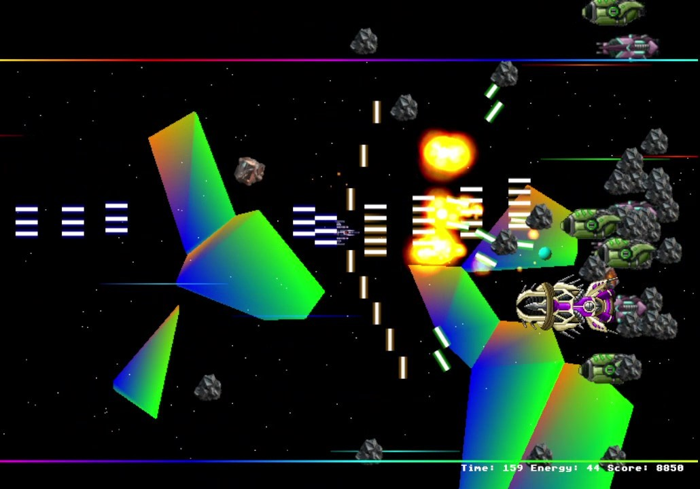
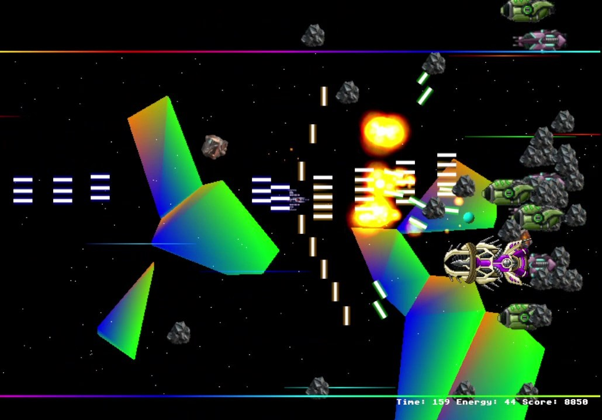

_________ .__ .__ / _____/__________ ____ ____ _____| |__ |__|_____ \_____ \\____ \__ \ _/ ___\/ __ \ / ___/ | \| \____ \ / \ |_> > __ \\ \__\ ___/ \___ \| Y \ | |_> > /_______ / __(____ /\___ >___ >____ >___| /__| __/ \/|__| \/ \/ \/ \/ \/ |__|
Old-school retro arcade 2d shmups game: 🚀 Spaceship 🚀
 
Attention all pilots! The future of Earth is at stake. Aliens are on the brink of conquering our planet, and humanity’s survival rests in your hands. As a skilled spaceship pilot, you are our last hope.
Your mission 🚀:
- Navigate the treacherous asteroid belt between Mars and Jupiter.
- Eliminate all alien threats you encounter.
- Avoid collisions with asteroids—your spaceship cannot withstand the impact.
Good luck, hero. The fate of Earth depends on you! 🚀✨
- GFX: Atari ST/Custom
- Font: Atari ST
- Music: Atari ST Chiptune
- FX: Atari ST/Custom
- Download the appropriate archive for your platform.
- Extract the contents to a desired location.
- Install OpenAL (included in the archive).
- Run the .exe file to start the game.
💚 Game Download 💚:
📌 Previous: 📌 Mirrors: 🚀 Support Spaceship – Keep the Adventure Alive! 🚀
Love playing Spaceship? Help fuel the journey! Your support keeps development going, improves features, and brings new exciting updates.
💚 Donate Bitcoin Cash (BCH) & support indie game development!
📌 BCH Address: bitcoincash:qrvhk77ujevd9n7jse4jewm99eg95at7tvc6m9v2vv
Every little bit helps! Thank you for being part of this mission. 🚀✨
Devlog:
- 03.03.25 Medium update: Bugfixes, much faster rendering, new beautiful, real-time, infinite background terrain system using procedurally generated triangle, player sprite is on always on top
- 10.02.25 Medium update: Bugfixes, new weapon, new FX: aura, transparency, damage
- 21.01.25 Medium update: Bugfixes, new enemy, new weapons & bullet patterns
- 11.10.24 Major update game & gfx
- 08.06.24 Bugfix Win 11 compatibility